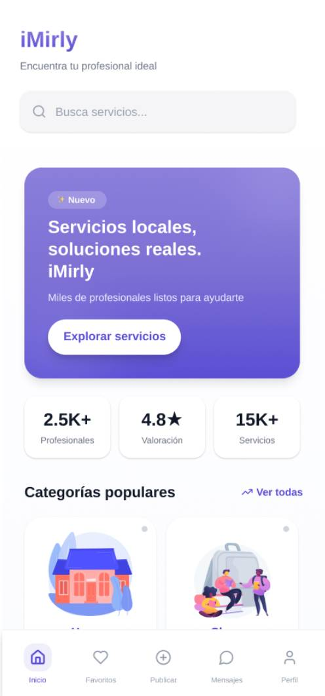

Análisis del entorno, oportunidad de mercado y posicionamiento de iMirly como plataforma de servicios locales.
Esta sección analiza el contexto de mercado en el que surge iMirly, los segmentos a los que se dirige y la estrategia planteada para su desarrollo y crecimiento.
iMirly es una aplicación móvil de tipo marketplace de servicios, diseñada para facilitar la conexión entre personas que necesitan un servicio y quienes lo ofrecen.
El core business de iMirly es la intermediación digital de servicios, ofreciendo una plataforma organizada, intuitiva y adaptable a diferentes tipos de profesionales y necesidades.
El producto se concibe inicialmente como una aplicación Android, con posibilidad de ampliación futura a otras plataformas.

Evitando la confusión de plataformas generalistas
Categorías y subcategorías que mejoran la búsqueda
Para quien busca y para quien ofrece servicios
Para proveedores de servicios
Nuevas categorías, funcionalidades y zonas geográficas
Claridad, accesibilidad y rapidez
Verificación de usuarios y sistema de valoraciones
Conexión directa entre vecinos y profesionales cercanos
El cliente principal de iMirly es cualquier persona que necesite contratar un servicio de forma rápida y sencilla, así como profesionales, autónomos o particulares que deseen ofrecer sus servicios y ganar visibilidad.
iMirly se dirige a un mercado amplio y escalable, con un elevado número de potenciales usuarios tanto en el lado de la demanda como de la oferta.
A medio plazo, el proyecto puede ampliarse a nuevas ciudades, regiones y tipos de servicios.
Crecimiento de la economía de servicios
Mayor digitalización de profesionales y autónomos
Aumento de la confianza en plataformas online
Tendencia hacia soluciones rápidas, locales y personalizadas
Posibilidad de incorporar valor añadido (valoraciones, suscripciones, funcionalidades premium)
Expansión a nuevos mercados y sectores emergentes
El mercado de plataformas digitales de servicios presenta una alta competencia, principalmente dominada por aplicaciones generalistas y algunos servicios especializados.
iMirly se posiciona como una alternativa especializada y organizada, centrada exclusivamente en servicios, lo que mejora la experiencia tanto del cliente como del proveedor.
Aplicaciones de compra-venta que incluyen servicios como una categoría más
Falta de especializaciónOrientados a sectores concretos o con procesos complejos
Poca accesibilidadServicios ofrecidos de forma informal, sin estructura ni garantías
Falta de organización| Aspecto | iMirly | Plataformas generalistas | Redes sociales |
|---|---|---|---|
| Especialización en servicios | Alta | Baja | Baja |
| Organización por categorías | Alta | Media | Muy baja |
| Facilidad de uso | Alta | Media | Media |
| Enfoque local | Alto | Medio | Alto |
| Experiencia de usuario | Alta | Media | Baja |
| Escalabilidad | Alta | Alta | Baja |
Este análisis muestra que iMirly destaca principalmente en especialización, organización y experiencia de usuario.
El análisis competitivo indica que iMirly tiene una posición favorable dentro de su segmento, ya que cubre una necesidad real del mercado con una propuesta clara y diferenciada. Con una estrategia adecuada de crecimiento y visibilidad, el proyecto tiene altas posibilidades de éxito y evolución.
Fase inicial: Gratuita para atraer usuarios y generar masa crítica.
A medio plazo:
Orientadas a:
Ejemplos: Destacados gratuitos temporales, beneficios para primeros usuarios, promociones de lanzamiento.
| Acción | Objetivo |
|---|---|
| Lanzamiento en redes sociales | Dar a conocer la aplicación |
| Captación de primeros anuncios | Generar contenido inicial |
| Promociones de lanzamiento | Aumentar registros |
| Feedback de usuarios | Mejorar el producto |
La estrategia de ventas de iMirly se basa en un modelo digital, donde la captación de usuarios y anunciantes se realiza principalmente a través de la propia aplicación y canales online.
No existe equipo de ventas comercial tradicional. Las funciones de captación y promoción son asumidas por los propios promotores del proyecto.
A medida que el proyecto crezca, se valorará la incorporación de un perfil comercial.
Validar el producto y el mercado
Ingresos progresivos
La organización de iMirly se basa en una estructura reducida y funcional, acorde a un proyecto digital en fase inicial.
Esta organización permite:
En caso de viabilidad económica, se planteará una remuneración acorde a resultados y responsabilidades.
No se prevé incorporación de nuevo personal
Fase inicial: Proyecto en desarrollo vinculado a trabajo académico, sin constitución formal de empresa.
Activos a proteger:
Fase posterior: Registro en OEPM y propiedad intelectual del software.
Gestión mediante asesoría especializada.
El establecimiento de iMirly no requiere infraestructura física, ya que se trata de una plataforma digital.
Trabajo coordinado por los promotores utilizando herramientas de desarrollo colaborativo y control de versiones.
Este enfoque progresivo permite reducir riesgos y mejorar el producto de forma continua.
Al tratarse de un proyecto digital, la inversión inicial necesaria para iMirly es reducida y se centra principalmente en activos intangibles.
La mayor inversión del proyecto corresponde al tiempo y conocimiento aportado por los promotores.
No se requieren grandes desembolsos económicos en la fase inicial.
Este modelo permite un crecimiento progresivo y controlado del proyecto.
iMirly surge como respuesta a una necesidad real del mercado: la dificultad de encontrar y ofrecer servicios de forma clara, rápida y organizada.
La creciente digitalización y el aumento de la economía de servicios hacen que el proyecto se sitúe en un entorno favorable para su desarrollo.
Como todo proyecto en fase inicial, iMirly presenta riesgos:
Mitigados por: bajos costes de inversión, flexibilidad del modelo y posibilidad de adaptación continua.
La rentabilidad se plantea a medio y largo plazo, una vez consolidada la base de usuarios y activados los modelos de monetización.
La baja inversión inicial y el carácter digital permiten una relación favorable entre coste y beneficio, con alto potencial de crecimiento.
iMirly es un proyecto viable, realista y alineado con las tendencias actuales del mercado digital.
Cuenta con una base sólida, un equipo comprometido y un enfoque progresivo que permite minimizar riesgos y maximizar oportunidades de crecimiento.
El análisis de mercado y la estrategia planteada confirman que iMirly responde a una necesidad real, con un modelo viable, escalable y alineado con las tendencias actuales del mercado digital.
Siguiente sección: Diseño & UX